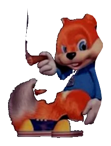

About Me

Hey there, my (screen)name is Cyiatic. I'm a fan of video games and video game related content. I like helping preserve them, as well as the best way(s) to play them. As you can probably tell by the theming of the site, I'm also a fan of Rare(ware).
Fan of Rare, eh?
I grew up playing various titles such as Donkey Kong Country (GBC and Wii), Diddy Kong Racing DS, and Star Fox Adventures. I was also introduced to Banjo at a young age via a neighbor.
Arguably the biggest contribution to my love of Rare was my birthday buddy. He gave me his N64 along with titles such as Conker's Bad Fur Day, GoldenEye 007, and Killer Instinct Gold, just to name a few.
The ability to enjoy so many Rare titles at a young age has left a positive impact on my gaming experience. When I think of a company dedicated to the consumer, I think of the golden era of Rare. From selling the whole game upon release, to hosting their own website, to having the guts to experiment with new graphical styles and minimal documentation, you can really see the love and attention to detail shine in the product. I haven't 100% every game yet, but even so I have to give the barn boys kudos for dedication to their craft.